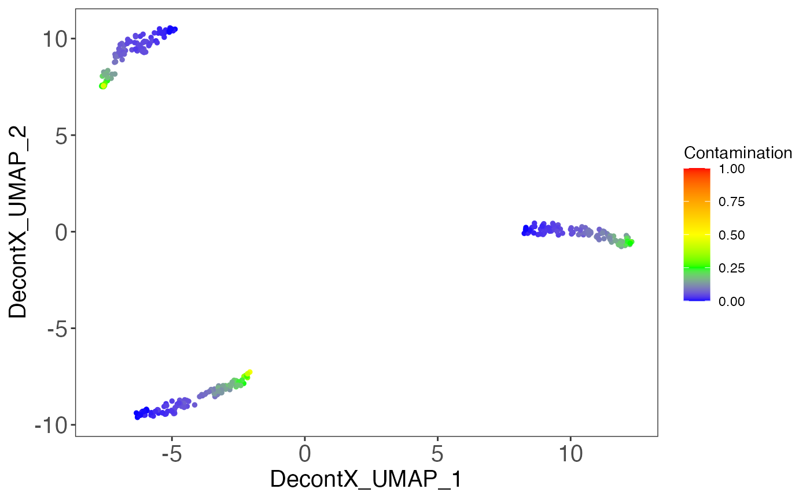
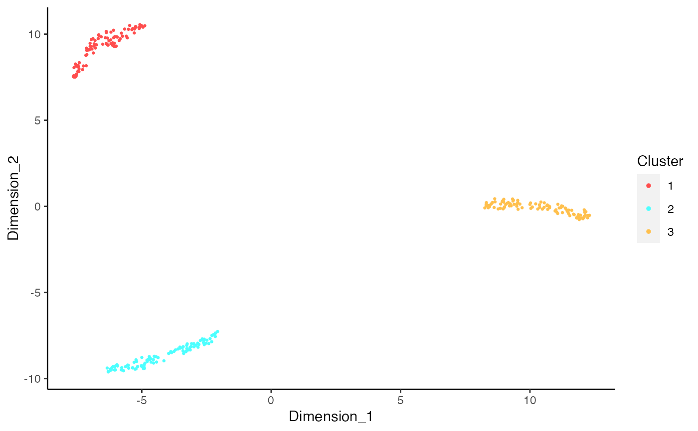
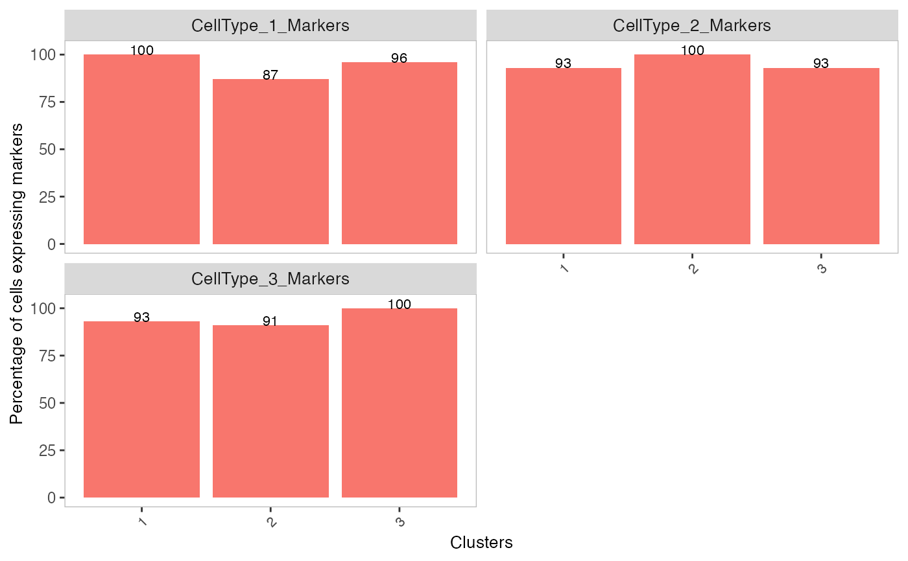
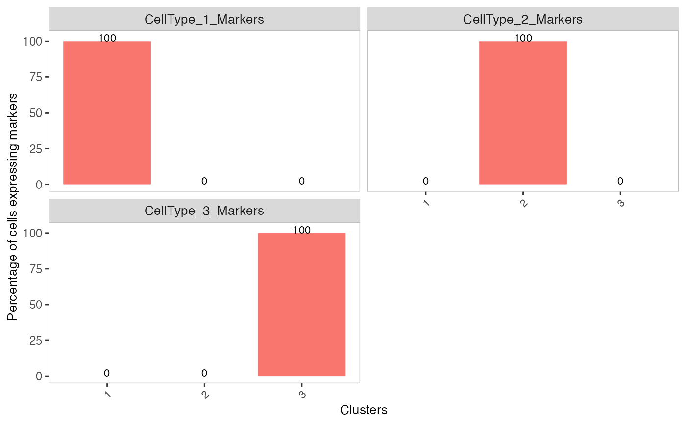
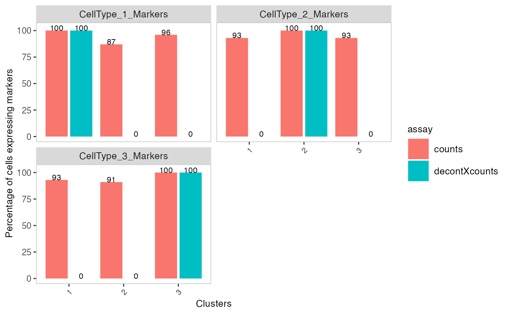
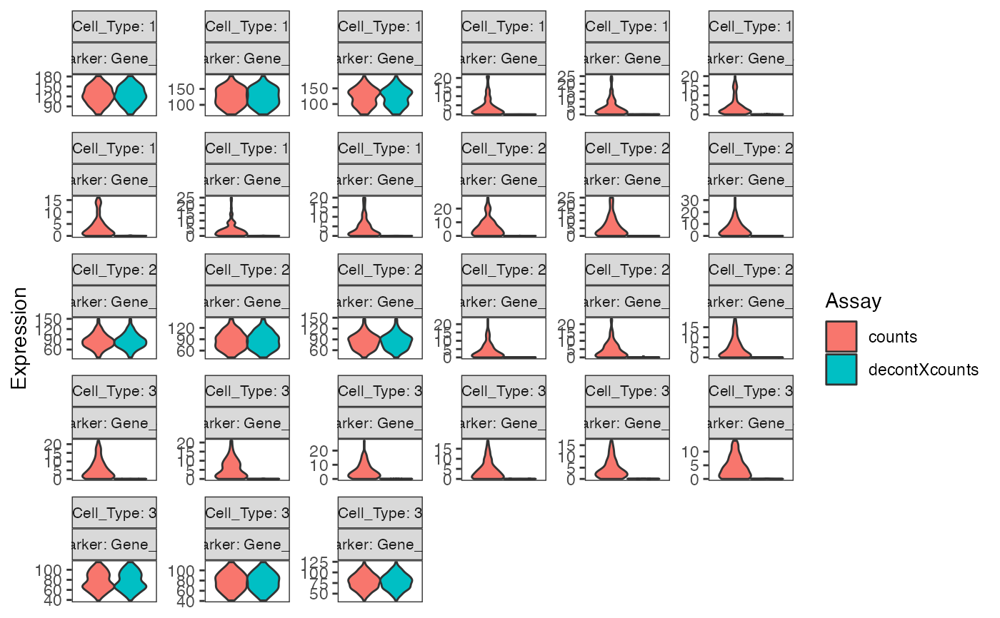

Identifies contamination from factors such as ambient RNA in single cell genomic datasets.
decontX(x, ...) # S4 method for SingleCellExperiment decontX( x, assayName = "counts", z = NULL, batch = NULL, background = NULL, bgAssayName = NULL, maxIter = 500, delta = c(10, 10), estimateDelta = TRUE, convergence = 0.001, iterLogLik = 10, varGenes = 5000, dbscanEps = 1, seed = 12345, logfile = NULL, verbose = TRUE ) # S4 method for ANY decontX( x, z = NULL, batch = NULL, background = NULL, maxIter = 500, delta = c(10, 10), estimateDelta = TRUE, convergence = 0.001, iterLogLik = 10, varGenes = 5000, dbscanEps = 1, seed = 12345, logfile = NULL, verbose = TRUE )
| x | A numeric matrix of counts or a SingleCellExperiment
with the matrix located in the assay slot under |
|---|---|
| ... | For the generic, further arguments to pass to each method. |
| assayName | Character. Name of the assay to use if |
| z | Numeric or character vector. Cell cluster labels. If NULL, PCA will be used to reduce the dimensionality of the dataset initially, 'umap' from the 'uwot' package will be used to further reduce the dataset to 2 dimenions and the 'dbscan' function from the 'dbscan' package will be used to identify clusters of broad cell types. Default NULL. |
| batch | Numeric or character vector. Batch labels for cells. If batch labels are supplied, DecontX is run on cells from each batch separately. Cells run in different channels or assays should be considered different batches. Default NULL. |
| background | A numeric matrix of counts or a
SingleCellExperiment with the matrix located in the assay
slot under |
| bgAssayName | Character. Name of the assay to use if |
| maxIter | Integer. Maximum iterations of the EM algorithm. Default 500. |
| delta | Numeric Vector of length 2. Concentration parameters for
the Dirichlet prior for the contamination in each cell. The first element
is the prior for the native counts while the second element is the prior for
the contamination counts. These essentially act as pseudocounts for the
native and contamination in each cell. If |
| estimateDelta | Boolean. Whether to update |
| convergence | Numeric. The EM algorithm will be stopped if the maximum difference in the contamination estimates between the previous and current iterations is less than this. Default 0.001. |
| iterLogLik | Integer. Calculate log likelihood every |
| varGenes | Integer. The number of variable genes to use in
dimensionality reduction before clustering. Variability is calcualted using
|
| dbscanEps | Numeric. The clustering resolution parameter used in 'dbscan' to estimate broad cell clusters. Used only when z is not provided. Default 1. |
| seed | Integer. Passed to with_seed. For reproducibility, a default value of 12345 is used. If NULL, no calls to with_seed are made. |
| logfile | Character. Messages will be redirected to a file named `logfile`. If NULL, messages will be printed to stdout. Default NULL. |
| verbose | Logical. Whether to print log messages. Default TRUE. |
If x is a matrix-like object, a list will be returned
with the following items:
decontXcounts:The decontaminated matrix. Values obtained
from the variational inference procedure may be non-integer. However,
integer counts can be obtained by rounding,
e.g. round(decontXcounts).
contamination:Percentage of contamination in each cell.
estimates:List of estimated parameters for each batch. If z was not supplied, then the UMAP coordinates used to generated cell cluster labels will also be stored here.
z:Cell population/cluster labels used for analysis.
runParams:List of arguments used in the function call.
If x is a SingleCellExperiment, then the decontaminated
counts will be stored as an assay and can be accessed with
decontXcounts(x). The contamination values and cluster labels
will be stored in colData(x). estimates and runParams
will be stored in metadata(x)$decontX. The UMAPs used to generated
cell cluster labels will be stored in
reducedDims slot in x.
Shiyi Yang, Yuan Yin, Joshua Campbell
# Generate matrix with contamination s <- simulateContamination(seed = 12345) library(SingleCellExperiment)#>#>#>#> #>#> #> #> #> #> #> #> #> #> #> #> #> #> #> #> #> #>#>#>#>#>#> #>#> #> #> #> #>#> #> #>#> #> #> #> #> #> #> #>#>#> #>#> #> #>#> #> #>#>#>#>#> #> #> #> #>#> #>#> #> #>#> #> #>#>#>#>#>#>#>#>#>#>#>#># Plot decontX cluster labels umap <- reducedDim(sce) plotDimReduceCluster(x = sce$decontX_clusters, dim1 = umap[, 1], dim2 = umap[, 2], )# Plot percentage of marker genes detected # in each cell cluster before decontamination s$markers#> $CellType_1_Markers #> [1] "Gene_47" "Gene_32" "Gene_86" #> #> $CellType_2_Markers #> [1] "Gene_70" "Gene_33" "Gene_48" #> #> $CellType_3_Markers #> [1] "Gene_74" "Gene_26" "Gene_20" #># Plot percentage of marker genes detected # in each cell cluster after contamination plotDecontXMarkerPercentage(sce, markers = s$markers, assayName = "decontXcounts")# Plot percentage of marker genes detected in each cell # comparing original and decontaminated counts side-by-side plotDecontXMarkerPercentage(sce, markers = s$markers, assayName = c("counts", "decontXcounts"))# Plot raw counts of indiviual markers genes before # and after decontamination plotDecontXMarkerExpression(sce, unlist(s$markers))